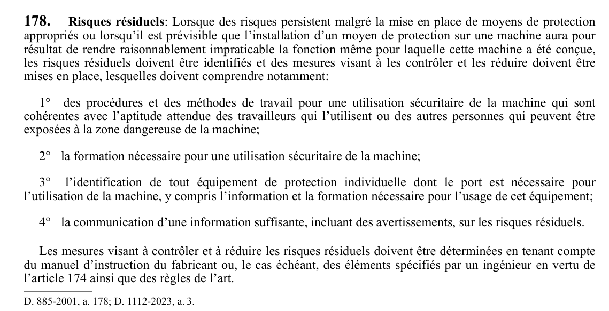

art-178-RSST : risques résiduels
Risques résiduels: Lorsque des risques persistent malgré la mise en place de moyens de protection appropriés ou lorsqu'il est prévisible que l'installation d'un moyen de protection sur une machine aura pour résultat de rendre raisonnablement impraticable la fonction même pour laquelle cette machine a été conçue, les risques résiduels doivent être...
🌐 LegisQuébec · 📄 PDF officiel
Texte officiel
Risques résiduels : Lorsque des risques persistent malgré la mise en place de moyens de protection appropriés ou lorsqu’il est prévisible que l’installation d’un moyen de protection sur une machine aura pour résultat de rendre raisonnablement impraticable la fonction même pour laquelle cette machine a été conçue, les risques résiduels doivent être identifiés et des mesures visant à les contrôler et les réduire doivent être mises en place, lesquelles doivent comprendre notamment:
1° des procédures et des méthodes de travail pour une utilisation sécuritaire de la machine qui sont cohérentes avec l’aptitude attendue des travailleurs qui l’utilisent ou des autres personnes qui peuvent être exposées à la zone dangereuse de la machine;
2° la formation nécessaire pour une utilisation sécuritaire de la machine;
3° l’identification de tout équipement de protection individuelle dont le port est nécessaire pour l’utilisation de la machine, y compris l’information et la formation nécessaire pour l’usage de cet équipement;
4° la communication d’une information suffisante, incluant des avertissements, sur les risques résiduels.
Les mesures visant à contrôler et à réduire les risques résiduels doivent être déterminées en tenant compte du manuel d’instruction du fabricant ou, le cas échéant, des éléments spécifiés par un ingénieur en vertu de l’article 174 ainsi que des règles de l’art.
Texte de l’article 178 RSST, extrait de la couche texte du PDF officiel (page 55), sans OCR ni retouche. La capture ci-dessous et le PDF font foi.
{kind=link}

Toucher l'image pour l'agrandir🔗 Voir art. 178 RSST dans le PDF (page 55) · texte à jour au 1er juin 2024
📚 Source légale : D. 885-2001, a. 178; D. 1112-2023, a. 3. · LégisQuébec
Voir aussi
Pages qui pointent ici (3)
- art-177-RSST : choix des moyens de protection Recueil législatif
- art-179-RSST : mesures de sécurité Recueil législatif
- RSST : Section 21 : Machines Recueil législatif